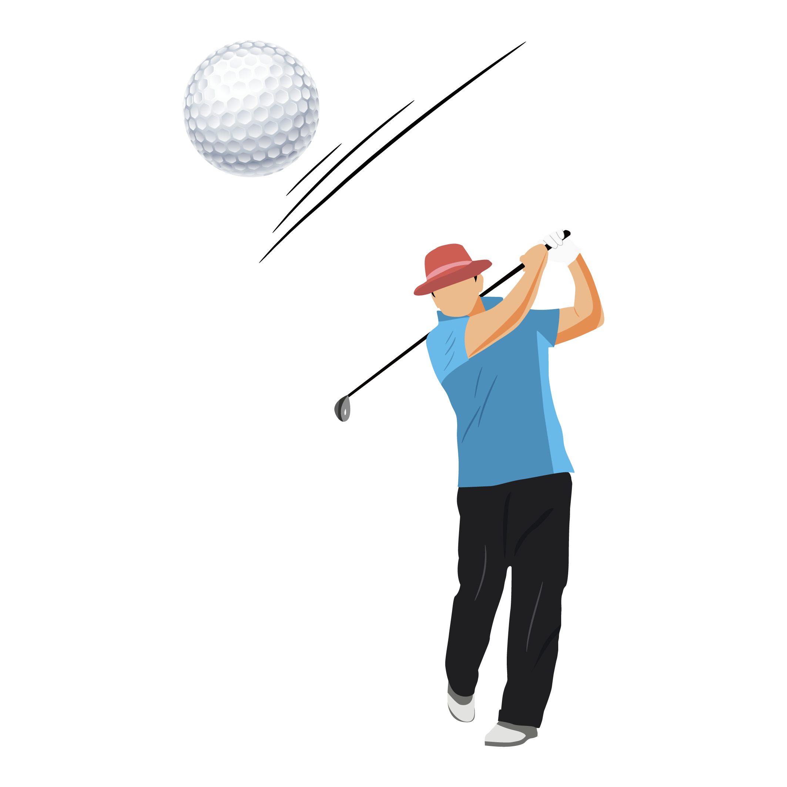

Sports Available
Football
Basketball
Volleyball
Cricket

Football
Basketball
Volleyball
Cricket
Basketball is a team sport where two teams, usually consisting of five players on each team, play against each other on a rectangular court. The objective is to get the ball through a hoop mounted high on a backboard on the opponent's side of the court, while preventing the opponent from shooting it into your team's hoop. It is a very popular sport worldwide, played with a round and usually orange(orange-brown) ball that bounces. Basketball players mainly use skills such as dribbling, shooting, running, and jumping.
Football is one of the most exciting games played world over. It also happens to be one of the oldest games. People have loved playing as well as watching this game since centuries. Many similar ball games were played in the earlier times. These were known by different names in different parts of the world however the rules of the game were almost the same everywhere.Football, the game that we know today, is played between two teams with 11 players in each team. It is played with a big circular ball which is kicked by the players with the aim to hit the goal. It takes a lot of energy and enthusiasm to win the game.
Volleyball is a team sport played with a ball and a net. There are teams on each side of the net. One team hits the ball over the net and into the other team's court, the other team must then hit the ball back over the net and in bounds within three tries without letting the ball touch the ground.There are two main kinds of competitive volleyball played in the world right now. They are team volleyball and beach volleyball. Both are Olympic sports and have competitive leagues. Team volleyball is played indoors on a hard court with 6 people per team. Beach volleyball is played outdoors on the sand with 2 players per team. The rules, strategy, and discussion here will focus on team volleyball.
Cricket is a bat-and-ball game played on a cricket field between two teams of eleven players each.The field is usually circular or oval in shape and the edge of the playing area is marked by a boundary, which may be a fence, part of the stands, a rope, a painted line or a combination of these.the boundary must if possible be marked along its entire length.n the approximate centre of the field is a rectangular pitch on which a wooden target called a wicket is sited at each end; the wickets are placed 22 yards (20 m) apart.The pitch is a flat surface 10 feet (3.0 m) wide, with very short grass that tends to be worn away as the game progresses (cricket can also be played on artificial surfaces, notably matting). Each wicket is made of three wooden stumps topped by two bails.